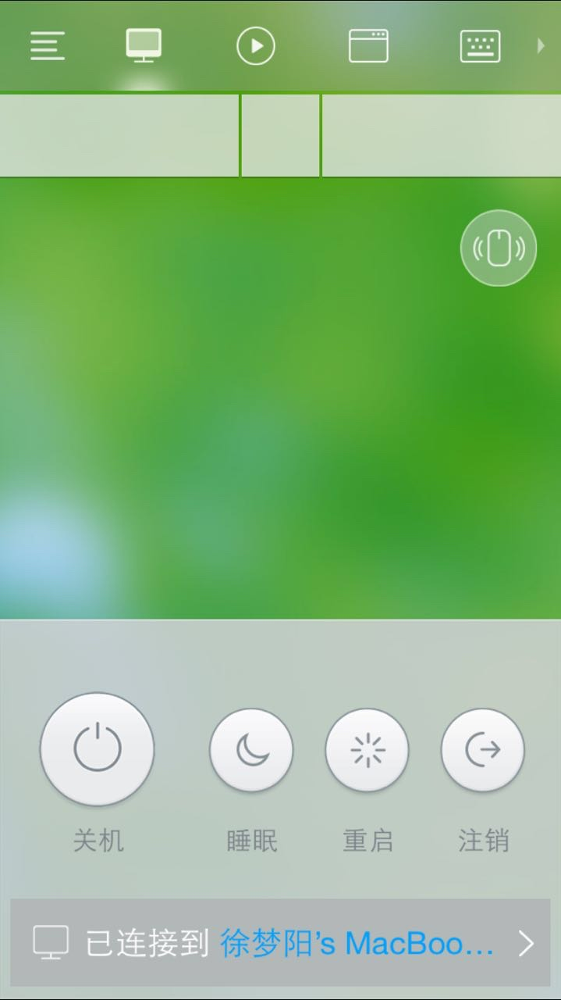

这一款软件主要是当你在使用mac本，不方便/没有鼠标的时候，拿它来当做鼠标来使用的……
 

Mac版
它能将你的ios和安卓设备，打造成一款好用的电脑的无线遥控器，同时它有如下功能：
- 完美模拟鼠标点击
- 支持多指触控
- 横屏功能键盘
- 多媒体遥控
- 图像助手
- 程序启动和切换面板
- 远程关机启动重启注销
- 数字键盘
- 用挥动的方式来移动鼠标
实际使用情况来看，只要两个客户端（手机+Mac）在同一个局域网下，只要打开就可以自动连接上，延迟很小，可以接受（但还得看网络情况）。
Mac客户端是不收费的，但是在IOS下，分为免费版和收费版本，但日常使用的话：免费版就完全足够了。
以下是软件的几个截图：
 

 

 


当然，不得不提出的一点是：把手机当成鼠标来使，是相当的不习惯啊！